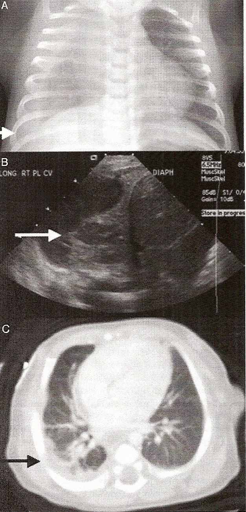

THE CIRCUMCISION REFERENCE LIBRARY
[CIRP Note: This case report appeared in a longer article. This is an extract of the case report. The case is reported from Houston, Texas.]
A 3150-g black infant was admitted to TCH [Texas Children's Hospital] at 27 days of age for inconsolable crying, fever (38.9°C), and 6 days of increasing respiratory distress. Medical history revealed an uncomplicated 38-week pregnancy, vaginal delivery, unknown maternal group B Streptococcus status, normal prenatal laboratory results, and circumcision.
Chest radiograph and ultrasound showed a large complex right pleural effusion with septations and internal debris surrounding an area of lung consolidation resulting in mediastinal shift (Fig 1 A and B). Blood and cerebrospinal fluid (CSF) were obtained for culture. A thoracentesis revealed pleural fluid with Gram-positive cocci in clusters on Gram-stain. The infant was admitted negative. Rapid viral studies for respiratory syncytial virus and influenza as well as viral culture were also negative. Both pleural fluid cultures grew MRSA susceptible to clindamycin. After antibiotic susceptibilities were available, 14 total days of therapy was completed with clindamycin alone through day-of-age 42.
|  FIGURE 1 Imaging of CA MRSA right-sided pneumonia and empyema. Shown are a chest radiograph (A) and ultrasound (B) performed on admission and chest computed tomography (C) after video-assisted thoracoscopic surgery with chest tube placement. Arrows indicate loculated fluid. |
The final chest tube was removed on day-of-age 31. Follow-up chest computed tomography on day-of-age 44 showed right-sided atelectasis and consolidation as well as fluid pockets in the right upper lobe suspicious for lung necrosis. The empyema was decreased in size (Fig 1C). After showing normal results from a nitroblue tetrazolium test, he was discharged on day-of-age 47.
http://www.cirp.org/library/complications/fortunov_2006/